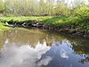

stream
phenomenon

Source: Wikipedia
Occurs in:
- aquifer~left_channel~stream_reach_water__baseflow_volume_flux
- aquifer~right_channel~stream_reach_water__baseflow_volume_flux
- channel~river_bed_channel~stream_reach_water__leakage_volume_flux
- channel~stream_reach_water~incoming__lateral_volume_flux
- channel~stream_reach_water~outgoing__lateral_volume_flux
- land_surface_terrain~left_channel~stream_reach_water__volume_flux
- land_surface_terrain~right_channel~stream_reach_water__volume_flux
- channel~stream_water__flow_duration_index